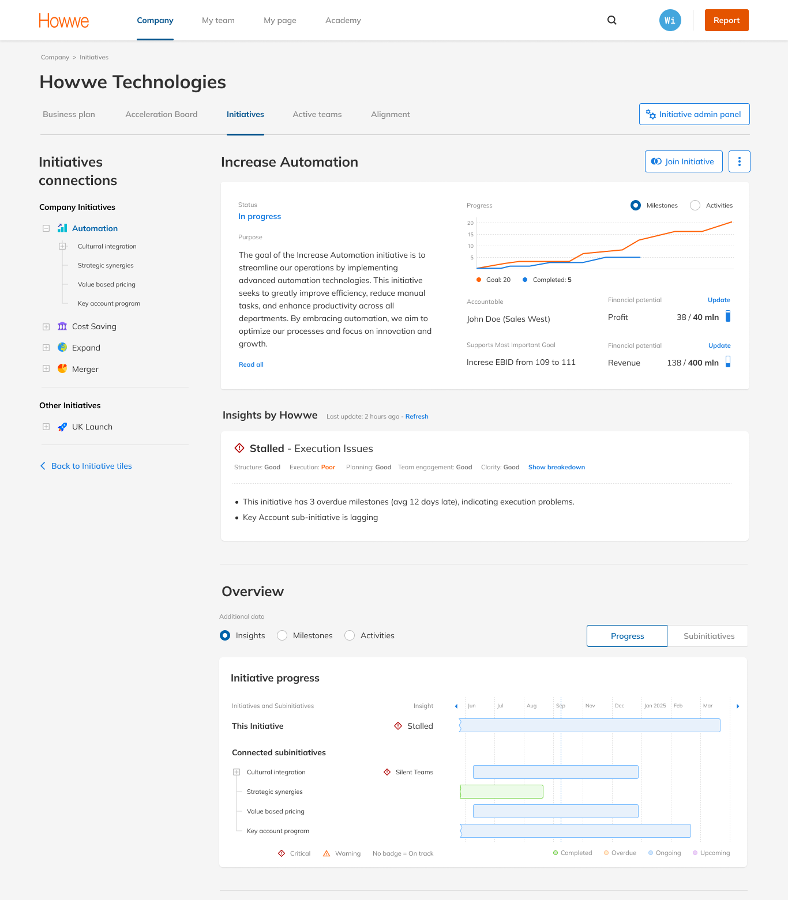
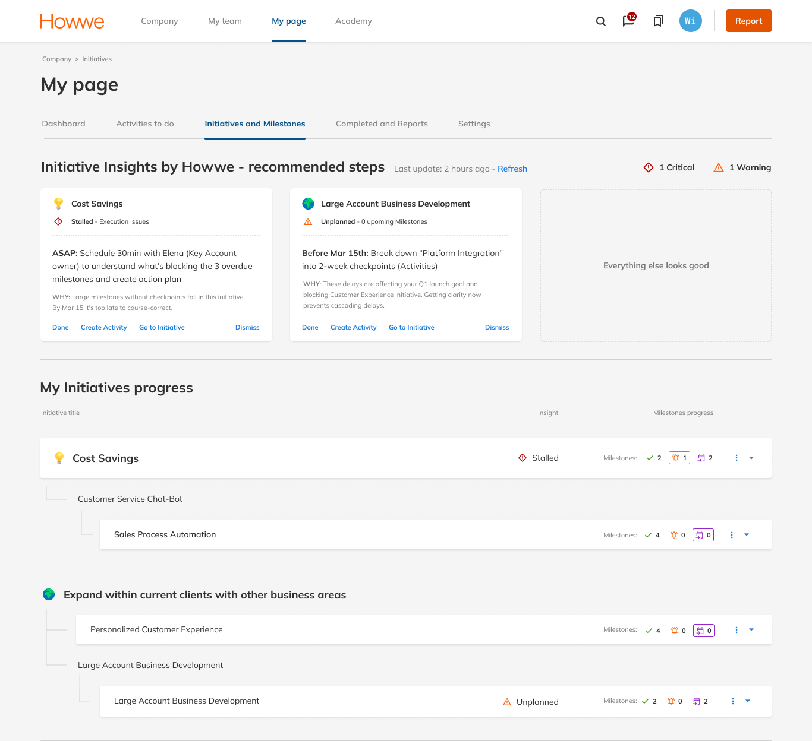
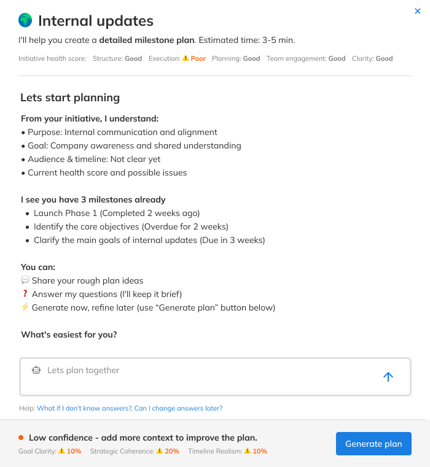
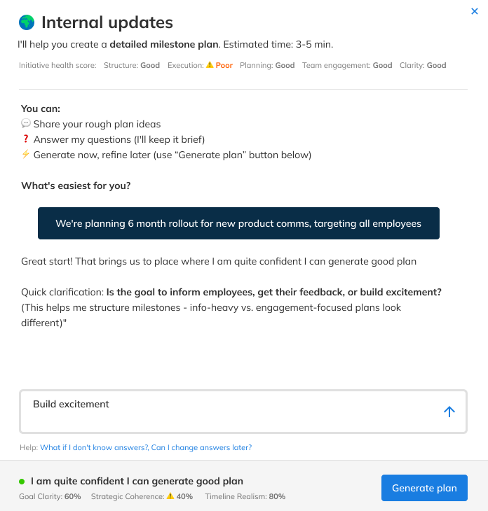
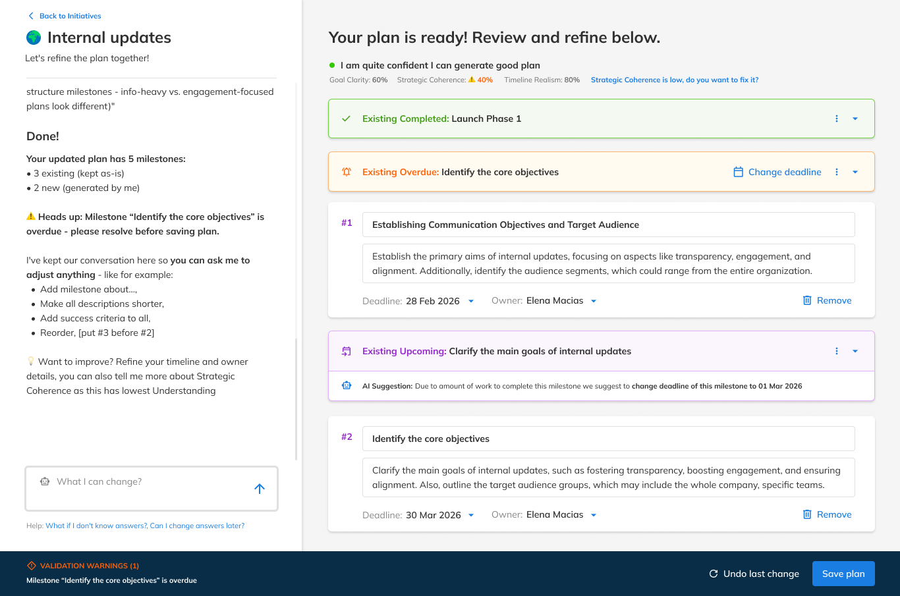

AI features · Enterprise SaaS · 2024-25
AI That Acts
Before Problems
Happen
The Problem
Organizations tracked dozens of strategic initiatives - but problems were only discovered when it was too late. Managers spent hours manually reviewing status. Milestone planning was guesswork. The platform was reactive: it showed what happened, not what would happen.
The Decision
A dedicated AI page was the suggested direction - easier to build, easier to scope. I proposed embedding insights into existing views instead: pulling managers out of their workflow creates high risk of disengagement. I presented the rationale, CEO aligned. AI lives in Strategic Plan, Initiative Details, and My Page.
Same feature, 3 locations
Proactive
Insights
Three entry points. Insights surface where the work already lives - Strategic Plan for executives scanning across the portfolio, Initiative Details for managers reviewing specific projects, My Page for owners tracking their own commitments. No separate AI dashboard. No new habit to build.
Point of view for:
View: Strategic Plan
The CEO opens Strategic Plan to scan 20+ initiatives. The question isn't “what happened?” - it's “what needs my attention right now?”
- Grouped by severity: critical first, then warning. Sorting eliminates the need to mentally filter a mixed list.
- Each card, three layers: badge gives 1-second triage. Name gives context. Bullets give enough detail to act, delegate or monitor.
- Inline badges, exception only: no badge means good news. Anything visible demands attention - nothing else does.
- Dual encoding: bar colour is completion, badge is health. Two different questions - merging them would make “red” ambiguous.
The executive already knows what's at risk - now they need to understand why. Initiative Details shows the full picture of a single initiative before the next review call.
- Verdict banner: a one-word verdict answers “is this healthy?” in one second. The five-area breakdown answers “what kind of problem, exactly?”
- Progressive disclosure: health score collapsed by default, summary shows only what's wrong. Full breakdown available on click - regular users skip it, new users learn without clutter.
- Bullet points with specific evidence: “3 overdue milestones, avg 12 days late” transforms AI from an oracle into an auditable assistant. Users can verify, dismiss or escalate with facts.
My Page - the owner's lens. Everything that needs attention today, nothing that doesn't.
- Summary bar counts only your initiatives: Strategic Plan answers “how is the portfolio doing?” My Page answers “how am I doing today?” The scope is intentional - other teams' health is noise here.
- Flat prioritised action list: owners are in executional mode - “tell me what to do now.” The card pattern from Strategic Plan was tested and rejected: a flat list gets to the first action in 5-10 seconds.
- Every action includes a “why”: not just what to do, but why it matters. Owners learn to recognise patterns rather than clear a list. Over time the system builds intuition.
 1
2
3
4
1
2
3
4

1 2 3
1 2 3From a sentence to a roadmap
Milestone
Planner
Generates structured milestone roadmaps for strategic initiatives - turning a goal description into an actionable plan. Existing milestones are preserved; only new ones are generated, and the user reviews and edits before anything is committed. The critical design challenge wasn't AI capability - it was trust. Enterprise users are accountable to their organisations for execution outcomes, and AI has to support that judgment rather than substitute for it.
STEP 1: Context before questions
AI reads the room
The manager describes a goal in plain language. In seconds, the platform returns a structured milestone roadmap - ready to review, edit and confirm. No templates, no forms.
- AI shows its starting point first: before asking anything, the system surfaces what it already extracted - purpose, goal, gaps. The user isn't repeating themselves, and trust is established before the first input.
- Three entry paths, no forced sequence: share rough ideas, answer questions, or generate immediately and refine later. An early version required five sequential answers - it felt like a form, and users said so.
- Understanding Level: a real-time score across Goal Clarity, Coherence and Timeline Realism. Not a gate - it shows why a plan might be weak, not just that it is.

1 2 3STEP 2: Conversation shapes the plan
Refinement
in real time
The AI doesn't wait for perfect input - it asks. Targeted questions based on what was already shared, until there's enough context to build a solid plan.
- Adaptive conversation, not a checklist: no fixed sequence. It continues until there's enough context to build a solid plan.
- Question rationale is visible: “this helps me structure milestones - info-heavy vs engagement-focused plans look different.” One sentence that turns a black box into a collaborator.
- Generate always available: the user decides when enough is enough - no forced completion, no minimum threshold.

1 2 3STEP 3: Review before you commit
Review, refine, save
The plan is ready. A full-page workspace - chat on the left, milestone cards on the right. Generation is the beginning of the conversation, not the end.
- Existing and new milestones clearly separated: colour-coded, new ones numbered. The user sees exactly what the AI generated versus what was already there - no surprises, no silent overwrites.
- AI flags issues before saving: an overdue milestone triggers a sidebar warning and a validation bar. The plan can't be saved until it's resolved, so AI acts as a quality gate rather than only a generator.
- Chat persists as a refinement tool: “what can I change?” stays available throughout. The conversation shifts from creation to collaboration.

1 2 3Summary
Outcome
AI Milestone Planner shipped to production after five design iterations over three months. The final flow - three flexible entry paths - emerged from testing an earlier version that required sequential answers before generating anything. It felt like a form. Users confirmed it.
AI Insights completed design and entered the development pipeline during my tenure.
How I validated
No hour-long research sessions. Pre-read sent upfront, 15-minute focused conversation on the most important points. Higher show rate, more honest signal. It worked because of who I was testing with - high-level managers don't do extended research sessions. I'd use it from day one with this audience. I wouldn't generalise it beyond.
What I learned
Managers don't resist AI - they resist losing authorship. The shift that unlocked adoption: reframing every feature from “AI decides” to “AI drafts, you approve.” Every design decision in this case traces back to that principle. Three enterprise clients requested beta access before public release.
I went in expecting the hard part to be what the AI could do. It turned out to be what people were willing to let it do - and that's a design problem, not a technical one.